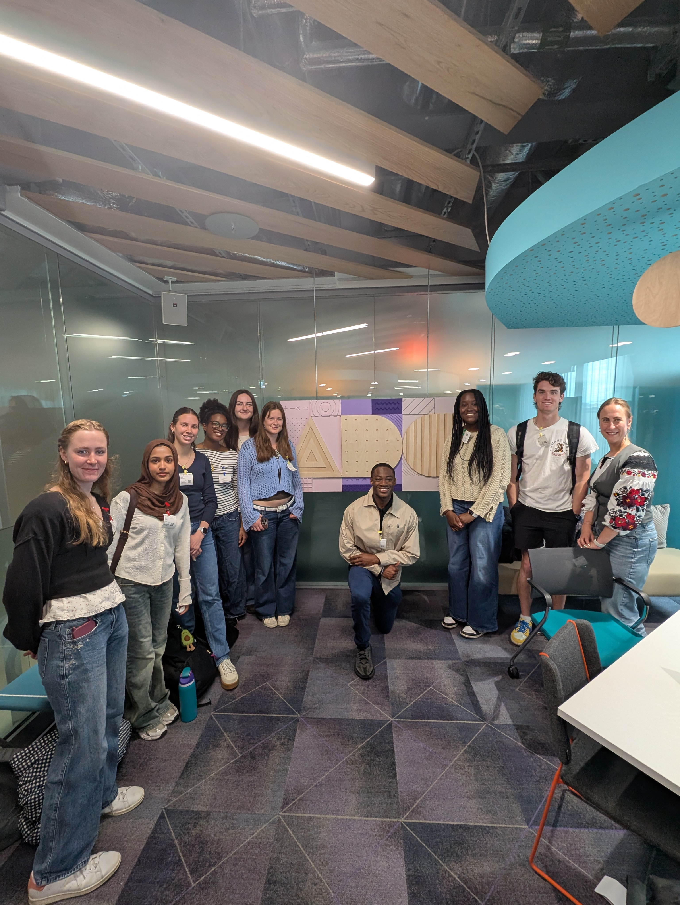
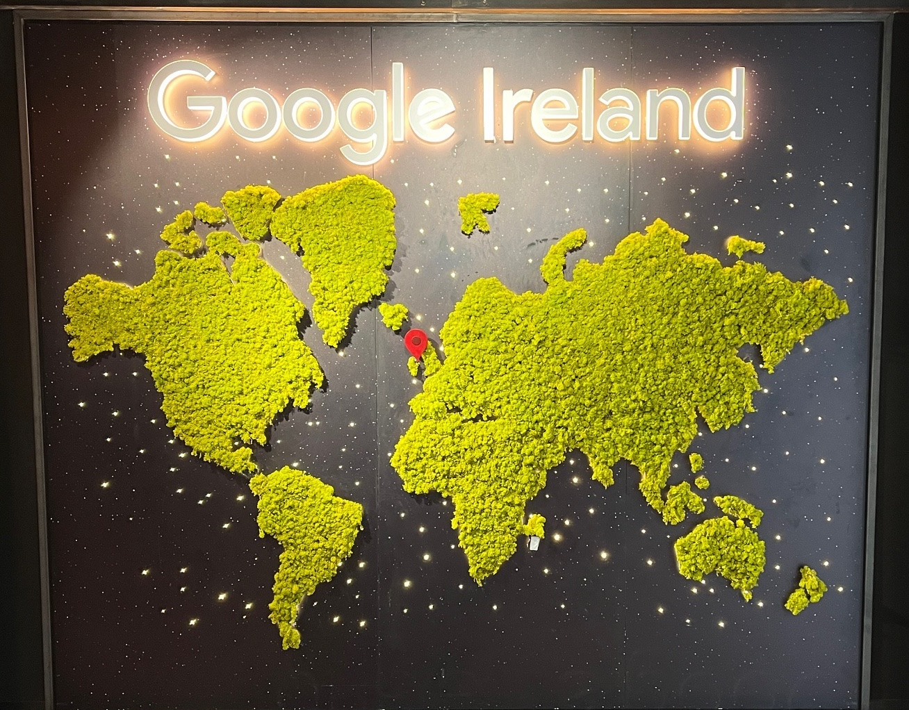
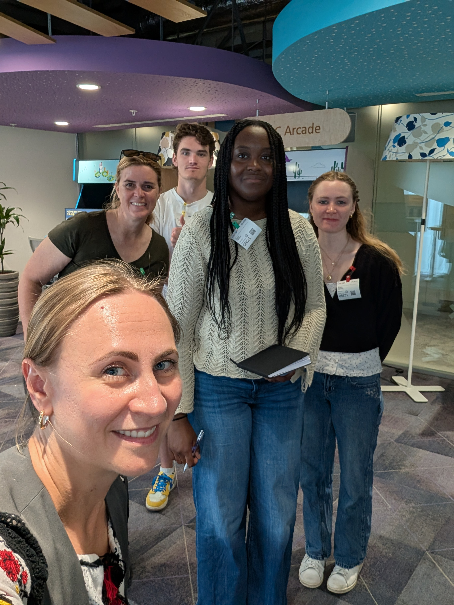

Tactile signage
Raised lettering at the entrance to the ADC.

Site Visit — Corporate Campus
A morning at Google Docks and the Accessibility Discovery Center
We spent a morning at Google Docks — first with Danny in Cloud Learning Services, then on a hands-on tour of the Accessibility Discovery Center (ADC) with Elita and Iryna. Between the campus tour and the ADC, we saw how Google’s Dublin teams think about accessibility, inclusion, and the social fabric of a modern workplace.

Our visit to Google Docks started off with Danny, a native Dubliner who works in Google’s Cloud Learning Services — the team that teaches businesses how to better incorporate AI. Danny emphasized the diversity of the Dublin campus: 65 different markets served, 44 languages, and six different cuisine restaurants on site.
There’s a “140m rule” at Google Dublin — you can never go more than 140m without encountering food.
Danny also walked us through why Google chose Dublin. It was largely a result of a change in political landscape, where Ireland shifted from a protectionist economy to one more open to foreign investment thanks to T.K. Whitaker and his creation of the IDA to attract foreign companies. Ireland also has one of the lowest corporate tax rates in Europe.

Google Dublin is made up of Google Docks, Gasworks House, Gordon House, and One Grand Canal. Danny emphasized the sociable, easy atmosphere that Google cultivates — meditation rooms, a massage center, saunas, a game room, a music room, a pool, and a gym. There is a deliberate culture of sitting next to someone you don’t know at lunch and asking what they’re working on.

We then went to the Accessibility Discovery Center (ADC), where we were given a tour by Elita and Iryna. The ADC is a space where Google employees can test their products with assistive technologies and get feedback from people with disabilities.
The room itself is designed to be accessible: a wide sliding automatic door, a floor designed for wheelchair use, and adjustable lights and desks. The space is split into the Assistive Experience and the ADC Arcade, with dedicated sections for vision, hearing, dexterity & cognitive, and neurodiversity. The ADC Arcade showcases gaming accessibility — one-handed controllers, foot controllers, and the Sony PlayStation 5 Access Controller.

“I liked how the lady who took us through the ADC room didn’t actually work in the room but works in sales. It shows how Google’s employees are well versed in accessibility even if they don’t work in that department directly.”
Raised lettering at the entrance to the ADC.
Adjustable desks with monitors under the ADC Arcade banner.

A demonstration of a low-tech AAC communication board.